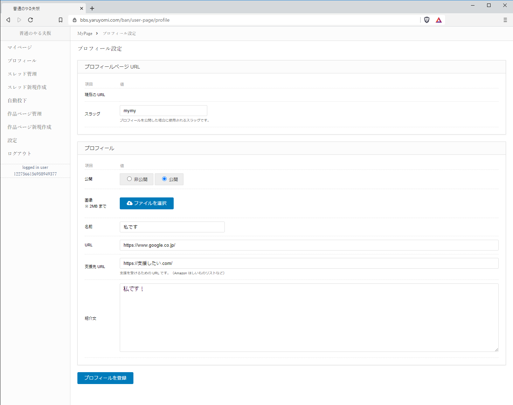
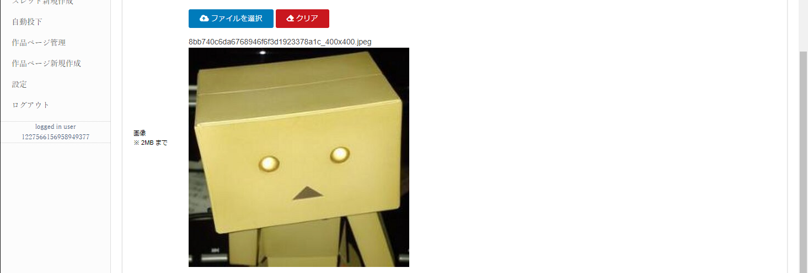

2. プロフィール設定¶
2.1. プロフィール情報の入力¶
メニュの「プロフィール」を押下して、プロフィール設定画面を表示します。
項目 |
説明 |
|---|---|
スラッグ |
プロフィールを公開した際に使用するURLのスラッグを指定します。 |
公開 |
プロフィールを公開するかどうか、「非公開」、「公開」のどちらかを選択して下さい。 |
画像 |
プロフィール画像を選択可能です。指定しない場合は「No Image」となります。 |
名前 |
公開するプロフィールの名前です。 |
URL |
ご自身のサイトなどのURLです。 |
支援先URL |
Amazonの欲しい物リストなど支援サイトのURLです。 |
紹介文 |
プロフィールの紹介文です。 |
2.2. プロフィール画像の選択¶
「画像」項目の、「ファイルを選択」ボタンを押下し、使用したい画像ファイルを選択します。 画像を削除したい場合は、「クリア」ボタンを押下して下さい。